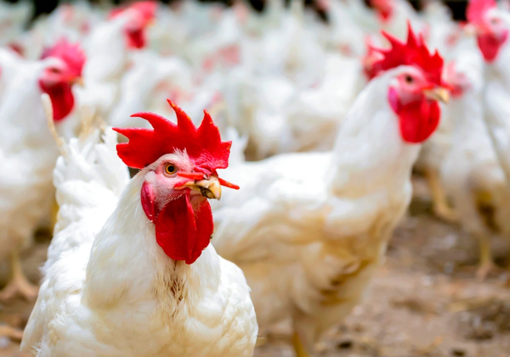
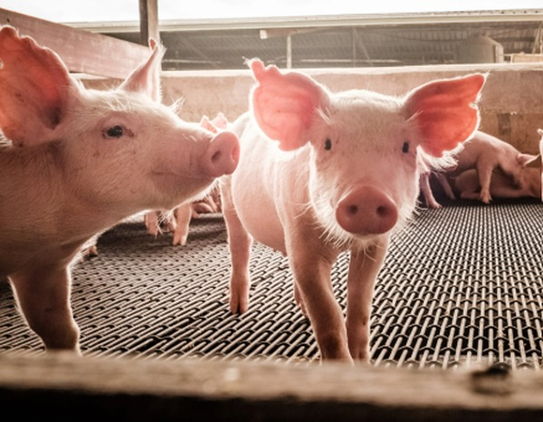
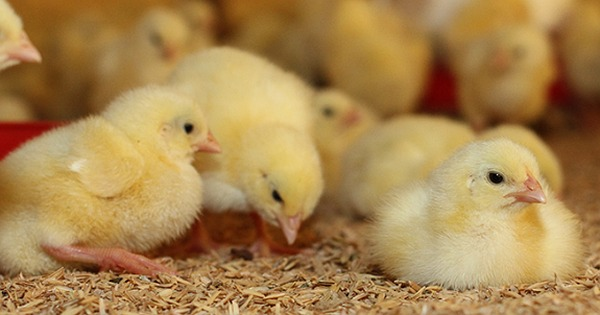
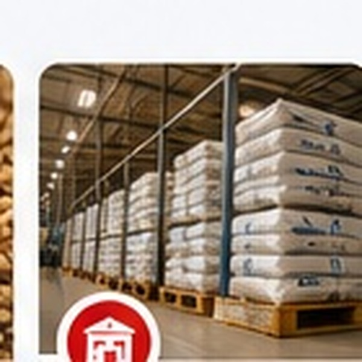

Misión
Gestionar y transformar la operación logística para entregar soluciones eficientes, confiables y oportunas, generando valor para el negocio y nuestros clientes.
Integramos personas, negocios, transporte, datos y tecnología para gestionar una cadena logística eficiente, trazable y conectada: desde nuestros centros de origen hasta nuestros clientes.
EXPLORAR LA CADENA →Una dirección común para asegurar continuidad operativa, eficiencia, servicio y transformación en cada eslabón.
Gestionar y transformar la operación logística para entregar soluciones eficientes, confiables y oportunas, generando valor para el negocio y nuestros clientes.
Ser una logística integrada, digital y predictiva, capaz de anticipar necesidades y conectar personas, procesos, activos y tecnología.
Una estructura de liderazgo enfocada en operación, servicio, productividad y transformación.
Estrategia, gobierno de la cadena y transformación logística.
Continuidad operativa, cumplimiento y nivel de servicio.
Productividad, recursos y disciplina operacional.
Optimización, control y mejora continua.
Negocios que forman parte de la operación logística. Cada imagen corresponde al negocio representado.

Traslado y operación de aves vivas desde origen hasta destino.

Gestión logística especializada para animales vivos.
Planificación, traslado y control de la operación de pavos vivos.

Distribución y control de pollitos BB en condiciones adecuadas.
Gestión de traslado y conservación del huevo incubable.
Abastecimiento y distribución de alimento para la cadena productiva.
Gestión logística de insumos y movimientos asociados a puertos y transporte.

Recepción, almacenamiento y despacho de materiales e insumos.
Una representación ejecutiva de los principales componentes que sostienen la cadena logística y su capa de gestión digital.
Catálogo real del Excel: selecciona una empresa, despliega un área y abre el dashboard directamente en Power BI.
Selecciona un área para desplegar sus dashboards y abrirlos en Power BI.
Portafolio real del archivo de proyectos, presentado como iniciativas accionables y sin mezclarlo con Analítica.
Proyectos y automatizaciones registrados en el CSV de implementación.
Organiza reuniones, conecta equipos y mantente al día con las actividades de la gerencia.
Logros, reconocimientos y actividades que muestran el trabajo de nuestros equipos.
Herramientas que convierten datos operativos en control, automatización y mejores decisiones.